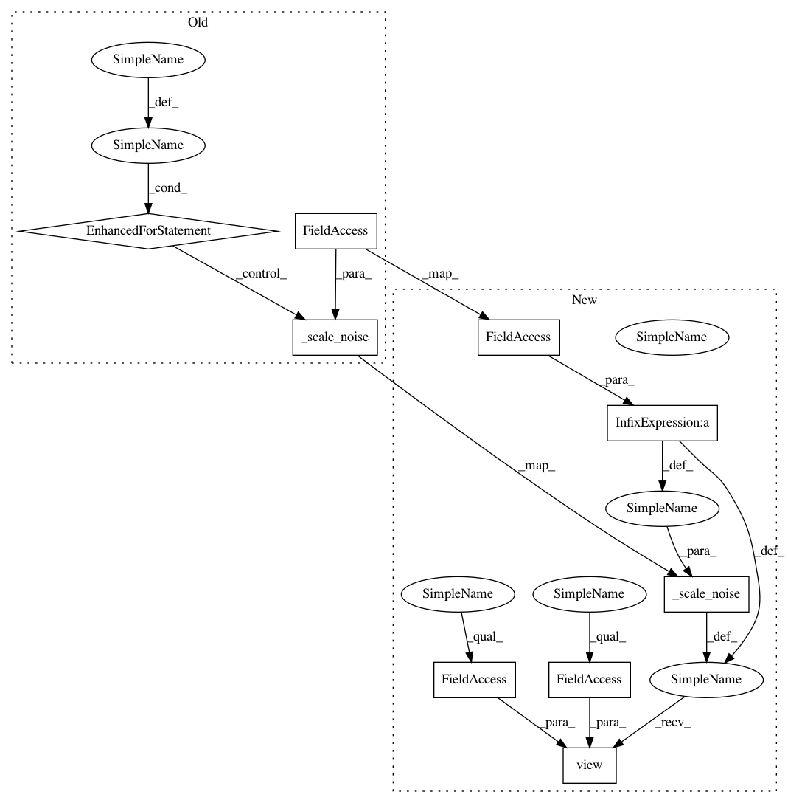

fe6cd9a95160fcdda74eec53b17a17800bf00f35,model.py,NoisyLinear,reset_batch_noise,#NoisyLinear#,46
Before Change
self.bias_epsilon.copy_(self._scale_noise(self.out_features))
def reset_batch_noise(self):
for b in range(self.batch_size):
epsilon_in = self._scale_noise(self.in_features)
epsilon_out = self._scale_noise(self.out_features)
self.weight_epsilon_batch[b].copy_(epsilon_out.ger(epsilon_in))
self.bias_epsilon_batch[b].copy_(self._scale_noise(self.out_features))
def forward(self, input):
output = F.linear(input, self.weight_mu, self.bias_mu)
if self.training:
if input.size(0) > 1:
After Change
def reset_batch_noise(self):
epsilon_in = self._scale_noise(self.batch_size * self.in_features).view(self.batch_size, 1, self.in_features)
epsilon_out = self._scale_noise(self.batch_size * self.out_features).view(self.batch_size, self.out_features, 1)
self.weight_epsilon_batch.copy_(torch.bmm(epsilon_out, epsilon_in))
self.bias_epsilon_batch.copy_(self._scale_noise(self.batch_size * self.out_features).view(self.batch_size, self.out_features))
def forward(self, input):
In pattern: SUPERPATTERN
Frequency: 3
Non-data size: 9
Instances
Project Name: Kaixhin/Rainbow
Commit Name: fe6cd9a95160fcdda74eec53b17a17800bf00f35
Time: 2018-03-10
Author: design@kaixhin.com
File Name: model.py
Class Name: NoisyLinear
Method Name: reset_batch_noise
Project Name: Kaixhin/Rainbow
Commit Name: fe6cd9a95160fcdda74eec53b17a17800bf00f35
Time: 2018-03-10
Author: design@kaixhin.com
File Name: model.py
Class Name: NoisyLinear
Method Name: reset_batch_noise